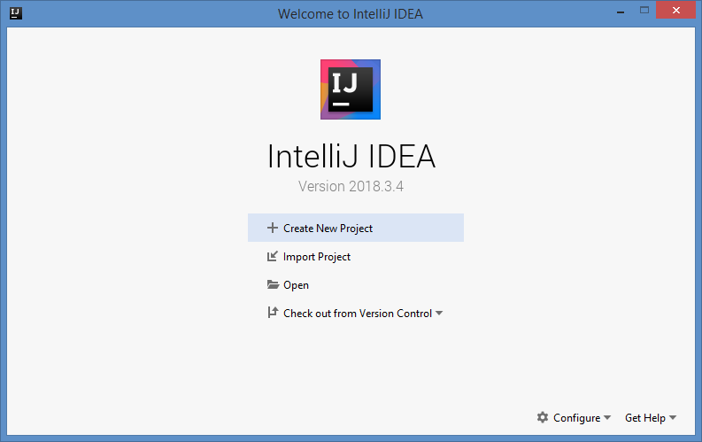
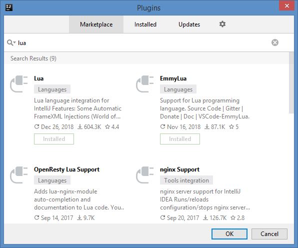
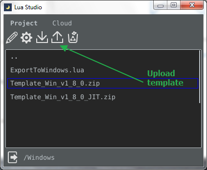
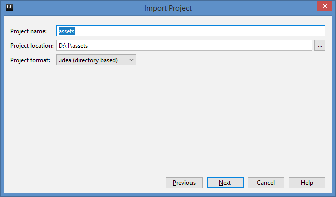
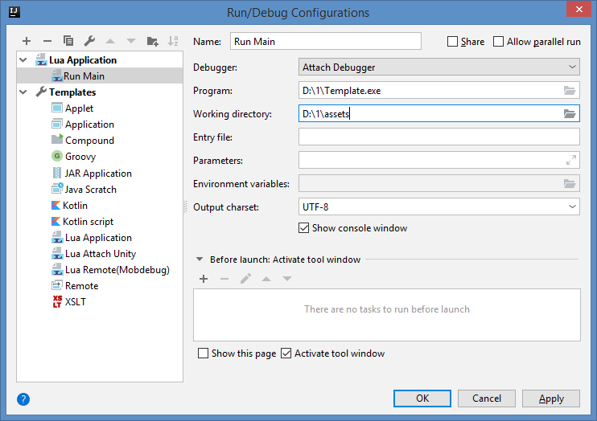
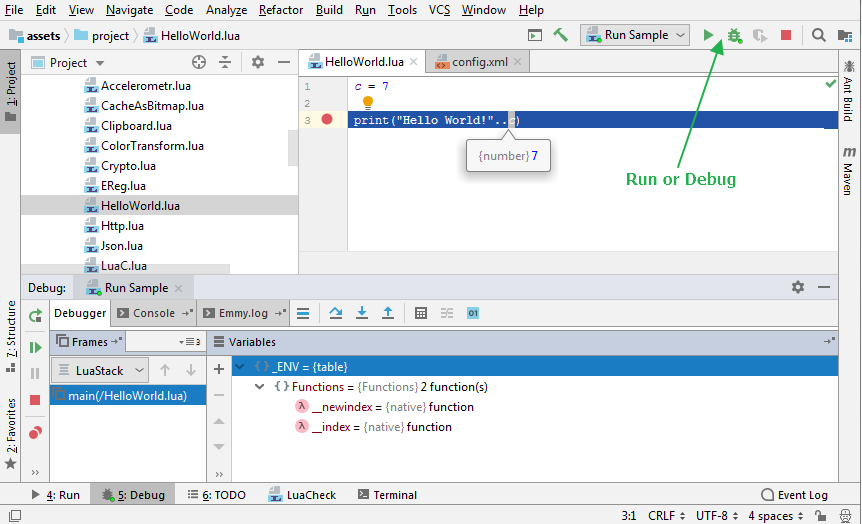

1. Install IntelliJ IDEA from: https://www.jetbrains.com/
2. Configure IDEA plugins and install EmmyLua plugin.
3. Export selected sample using LuaStudio(LS) exporter or upload template zip from LS exporter and unpack it to new folder (D:\1 for example).
4. Import unpacked/exported project asset folder to ItelliJ IDE. (D:\1\assets)
5. Configure IDE Run. Use Template.exe or TemplateJIT.exe file from unpacked project as launcher:
6. Mark /assets/project folder as "Sources Root" (Configure folder categories doc)
- Right-click a folder(/assets/project) in the Project tool window.7. Edit project config.xml file startPath="/HelloWorld.lua" or title="Any title ..." attributes if you want different start script or window title
8. Run or Debug configured script.
